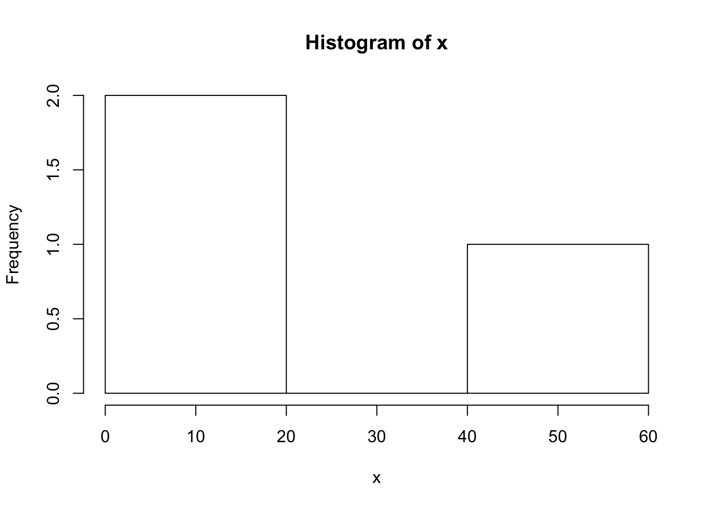

Dictionary
Joschka Schwarz
2020-03-29
Dictionary
General bits
?function_nameThis function provides information about how particular pieces of syntax work.
?list.fileslist.files()This function lists all the names of each file in a given R project.
list.files()## [1] "_site.yml" "data_wrangling.html"
## [3] "data_wrangling.Rmd" "dictionary.Rmd"
## [5] "docs" "ggplotgraphs.Rmd"
## [7] "images" "index.Rmd"
## [9] "journal_cache" "journal_files"
## [11] "journal.Rmd" "lab_journal_website.Rproj"
## [13] "links.Rmd" "practice.Rmd"
## [15] "README.md" "Rprof.out"
## [17] "site_libs" "statistics.Rmd"
## [19] "testfile.txt"…
Input and output
saveRDS()This saves an R object to a file.
x <- 1
save("x", file = "testfile.txt")readRDS()This loads saved data.
load(file = "testfile.txt")…
Data Creation
- c() This function is used to combine elements (factors in a vectore for example)
c(1,2,3,4,5)## [1] 1 2 3 4 5- from:to (where from and to are replaced with numbers, e.g. 1:10) This lists all the numbers in a specified range.
1:10## [1] 1 2 3 4 5 6 7 8 9 10seq()Not exactly sure what is happening here but it appears that this function is using the first two numbers to help derive the third.
seq(2,10,7)## [1] 2 9rep()This function replicates the first number the number of times that is designated in the second space
rep(1,10)## [1] 1 1 1 1 1 1 1 1 1 1- data.frame() This allows one to enter specific groups of data values ex.
data.frame(1, 2, 3, 5)## X1 X2 X3 X5
## 1 1 2 3 5- list() This provides a numbered list for all objects in a set.
list(2,6,1,3,8)## [[1]]
## [1] 2
##
## [[2]]
## [1] 6
##
## [[3]]
## [1] 1
##
## [[4]]
## [1] 3
##
## [[5]]
## [1] 8rbind()andcbind()This function allows you to bind a new row to an existing data frame
A <- 1
B <- 2
df <- rbind(A, B)##Slicing and extracting data indexing vectors x[n] nth element x[-n] all but nth element x[1:n] first n elements x[-(1:n)] elements from n+1 to the end x[c(1,4,2)] specific elements x[“name”] elements named “name” x[x>3] all elements greater than 3 x[x > 3 & x < 5] all elements between 3 and 5 x[x %in% c(“a”,“and”,“the”)] all elements in given set
##Indexing lists x[n] list with elements n x[[n]] nt h element of the list x[[“name”]] element of the list named “name” x$name id.
##Indexing matrices x[i,j] element at row i, column j x[i,] row i x[,j] column j x[,c(1,3)] columns 1 and 3 x[“name”,] row named “name” Indexing data frames (matrix indexing plus the following) x[[“name”]] column named “name” x$nameid.
##Variable conversion as.data.frame(x) as.numeric(x) as.logical(x) as.character(x)
##Variable information 1.is.na(x) 2.is.null(x) 3.is.data.frame(x) 4.is.numeric(x) 5.is.character(x) 6.length(x) 7.dim(x) 9.nrow(x) 10.ncol(x) 11.class() 12.attributes()
##Data selection and manipulation 1.which.max() 2.which.min() 3.which() 4.sort() 5.unique() 6.table() 7.sample()
##Math 1.max() This sets the maximum value included in a data set.
x <- c(1,2,3,4,5,10)
max(x)## [1] 102.min() This set the minimum value included in a data set.
x <- c(1,10,20,100)
min(x)## [1] 13.range() This determines the range of numbers considered in a set.
x <- c(1, 10, 20, 40, 100)
range(x)## [1] 1 1004.sum() This function adds all the numbers in a given set.
x <- c(1, 10, 20, 40, 100)
sum(x)## [1] 1715.mean() Creates the mean of a given set of number values.
x <- c(1, 10, 20, 40, 100)
mean(x)## [1] 34.26.median() calculates the median of a set of numbers.
x <- c(1, 10, 20, 40, 100)
median(x)## [1] 207.var() This calculates the variance of a set of values.
x <- c(1, 10, 20, 40, 100)
var(x)## [1] 1563.28.sd() This calculates the standard deviation of a set of values.
x <- c(1, 10, 20, 40, 100)
sd(x)## [1] 39.537329.cor() This calculates the correlation between groups of data.
x <- c(1, 10, 20, 40, 100)
y <- c(50, 60, 100, 200, 300)
cor(x,y)## [1] 0.972758710.round() This rounds a decimal to a specified number of decimals.
round(5.4567,1)## [1] 5.511.abs() This takes the absolute value of a given number.
abs(-20)## [1] 20##Matrices t() diag() rowSums() colSums() rowMeans() colMeans()
##Advanced Data processing apply() aggregate() Strings paste() strsplit() tolower() toupper
##Plotting hist() This function creates a histogram graph of a given set of data.
x <- c(1,20,50)
hist(x)
plot() This function creates a plot graph of a given set of data.
x <- cbind(c(1,2,3,4),c(10,20,30,40))
plot(x)
##Distributions rnorm() This function inserts a normal distribution.
rnorm(100, mean = 50, sd=2)## [1] 49.44467 50.91577 49.76838 50.45350 47.01308 47.26941 51.75514 45.95909
## [9] 53.54557 47.74696 51.12000 49.87093 52.72203 50.59327 53.98611 49.68630
## [17] 51.23441 49.63357 48.55985 49.62216 49.85641 47.11743 50.66202 50.21814
## [25] 49.38402 48.11081 48.93614 51.39440 48.80890 50.13549 53.97484 49.72495
## [33] 50.26609 47.86023 51.03756 50.70304 51.13731 48.11483 50.08776 50.67841
## [41] 49.92192 47.57118 48.37107 50.71473 49.70384 50.23134 49.66480 52.11047
## [49] 49.68923 51.30014 48.08334 51.34954 49.32398 50.51062 47.39580 51.12908
## [57] 51.06513 49.74966 51.34345 48.74151 52.34907 50.00700 49.75011 52.23871
## [65] 49.45040 48.27490 47.55379 46.84461 51.86975 51.50230 48.91399 50.16712
## [73] 49.13372 50.59713 48.97045 49.94896 48.34773 50.64074 47.01896 44.65197
## [81] 48.19005 46.83519 52.58208 53.30664 50.48357 51.65282 49.75725 47.18657
## [89] 50.47452 48.14804 48.24018 51.69573 50.55074 49.69601 53.13701 53.14419
## [97] 49.96383 52.54247 50.21752 47.70331##Programming show that you can define a function show that you can write a for loop show that you can write a while loop show that you can write an if else statement Explain what return() does inside a function, show you can use it Explain what break() does, show you can use it
##Installing some packages Use the packages tab in R-studio to install these packages. You will need to be connected to the internet when you do this. If you are installing on your laptop, or on R-studio Cloud, then these packages will not need to installed again.